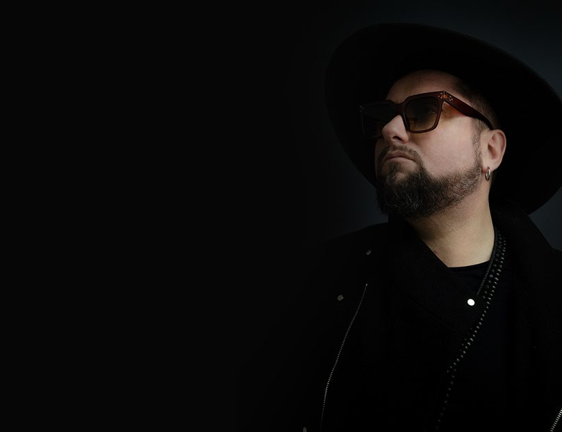
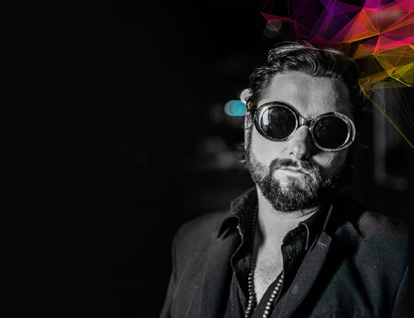
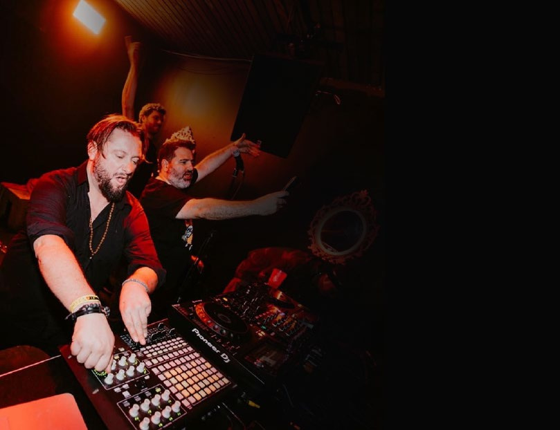

08
Tips for DJs & producers
Two decades of studio and booth experience, distilled into working principles — by Demian Muller.

Electronic Artist · DJ · Live Act

Demian Muller is an electronic music artist, DJ and live act with an international career spanning more than 20 years.
Since 2008, he has released over 500 tracks and remixes on labels including Cadenza, 8Bit, Get Physical Music, Circus Recordings, Sincopat, CR2 Records and Cluber. His sound moves between house, tech house and minimal, with influences from afro house and organic house, focused on groove, atmosphere and club functionality.
A 3-time Beatport Remix Contest winner, Demian has collaborated on remixes with artists including John Digweed, Yousef, Djuma Soundsystem, DJ Pierre and Proudly People, among others.
He has performed at venues and festivals including Creamfields, Ultra Music Festival, Pacha, Privilege, MAD Club Lausanne, D! Club Lausanne, Club La Feria, Buddha-Bar and Festival Nomade, among others.
He has also shared the stage with artists such as Carl Cox, Seth Troxler, The Martinez Brothers, Paul Kalkbrenner, Nicole Moudaber, Monolink, John Digweed and Damian Lazarus.
Demian performs both as a DJ and Live Act, presenting original productions and live vocal elements for clubs, festivals and boutique events.

Frontman of FLY O TECH — a project blending electronic and organic elements, reaching millions of streams across digital platforms.

DJ & Live Act — original productions and live vocals for clubs, festivals and boutique events worldwide.
Selected releases and remixes across the labels that shaped his catalogue. Play a track from each below.
CR2 Records — "Melnoly" on Beatport ↗
A selection of labels associated with Demian Muller's releases and DMF Academy student results.
A practical program designed to help you create, finish and improve real music — built from more than two decades of professional studio experience.
8 LIVE classes on Zoom, ~60–90 min each. Personalized 1-on-1 or small groups — in 1-on-1 the content adapts to your level, style, projects and goals. Practical from day one: we work on real music, find the problems and apply the solutions.
Tracks you finish during the course can receive free mastering — so the process ends with music ready to present or release, not just a class.
Common production and sound tools such as Ableton Live and Loopcloud. Teaching doesn't depend on a specific plugin collection — the focus is judgment and transferable skills.
You have ideas, loops or started projects, but you don't know how to develop them, finish them or make them sound the way you want.
You understand structure, sound selection, bass, mixing, workflow and the creative process — and you have a method to take ideas to finished tracks.
Ask about payment options and schedule availability.
Add-on · How to reach labels — a focused session (~USD $80) on presenting your music and contacting labels: approach strategy and track presentation.
This isn't just another course. It's a system to finish music.
Book your spot →Real lessons from the program — a look inside DMF Academy, module by module.
Two decades of studio and booth experience, distilled into working principles — by Demian Muller.
Available worldwide for clubs, festivals and boutique events — as DJ or Live Act.